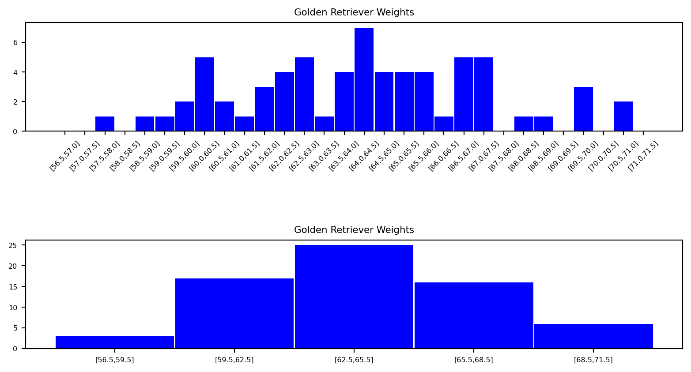
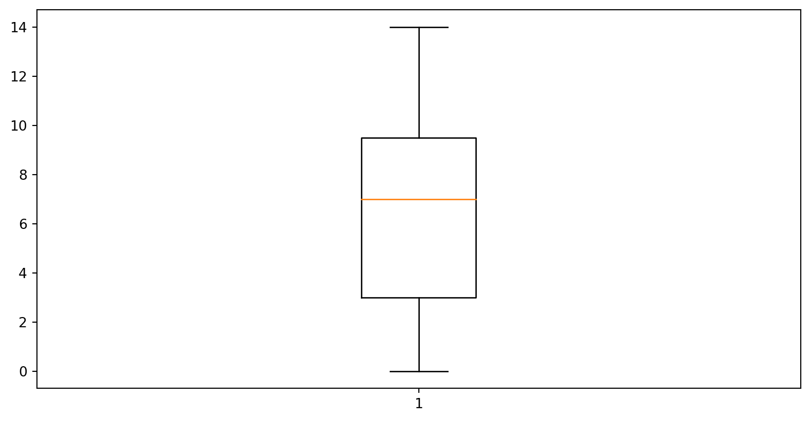

\[ \renewcommand{\P}{\mathbb{P}} \renewcommand{\E}{\mathbb{E}} \newcommand{\R}{\mathbb{R}} \newcommand{\var}{\mathrm{Var}} \newcommand{\cov}{\mathrm{cov}} \newcommand{\corr}{\mathrm{corr}} \newcommand{\dx}{\,\mathrm{d}x} \newcommand{\dy}{\,\mathrm{d}y} \newcommand{\eps}{\varepsilon} \]
Statistics is the collection, analysis and interpretation of data.
Data can be qualitative (e.g. hair colour) or quantitative (numerical); and discrete (distinct values, e.g. hair colour) or continuous (a range of values, e.g. height).
Descriptive statistics involves using tools, for example calculating the mean, median, mode, and using charts, to describe data.
Statistical inference tries to uncover attributes about a larger population, often based on a sample.
Descriptive statistics is the most commonly understood part of statistics and we use it to summarise data. Inferential statistics tries to uncover attributes about a larger population, often based on a sample — it is often misunderstood and less intuitive than descriptive statistics.
A population is the collection of objects or people under discussion, which can be both finite and infinite.
Examples of populations could be “all Swansea University students”, “all adults in the UK”, or “all Golden Retrievers in Scotland”.
A sample is any subset of a population.
In practice it is often not possible or practical to gain information about a whole population, so we often use a sample instead. If we are going to infer attributes about a population based on a sample, it’s important the sample be as random as possible so we do not skew our conclusions — i.e. we want to avoid bias.
A. Confirmation bias is gathering only data that supports your belief, which can even be done unknowingly. An example of this is following only social media accounts you politically agree with, reinforcing your beliefs rather than challenging them.
B. Self-selection bias is when certain types of subjects are more likely to include themselves in the experiment. For example, this could be walking onto a flight and polling the customers if they like the airline over other airlines, and using that to rank customer satisfaction among all airlines.
C. Survival bias captures only living and survived subjects, while the deceased ones are never accounted for. For example, many management consulting companies and book publishers like to identify traits of successful companies/individuals and use them as predictors for future successes. These works are pure survival bias, since they do not account for companies/individuals that failed in obscurity, and these “success” qualities may be commonplace with failed ones as well.
The sample mean, denoted by \(\bar{x}\), of a sample of observations \(x_1, x_2, \ldots, x_n\) is given by \[ \bar{x}=\frac{1}{n} \sum_{i=1}^n x_i=\frac{x_1+x_2+\cdots+x_n}{n}. \]
Analogously, the population mean, denoted by \(\mu\), of a population of observations \(x_1, \ldots, x_N\) is given by \[ \mu=\frac{1}{N} \sum_{i=1}^N x_i=\frac{x_1+x_2+\cdots+x_N}{N}. \]
Eight people from the general UK population were polled on the number of pets they own. The results are shown below: \[ 1, 3, 2, 5, 7, 0, 2, 3. \] These are the \(x_1, \ldots, x_8\) terms as in the previous definition of the sample mean. Therefore, the sample mean is given by: \[ \bar{x}=\frac{1+3+2+5+7+0+2+3}{8}=\frac{23}{8}=2.875. \]
We define the weighted mean by \[ \frac{x_1\cdot w_1+x_2\cdot w_2+\cdots+x_n\cdot w_n}{w_1+w_2+\cdots+w_n}, \] where \(x_1,\ldots,x_n\) denote the observations and \(w_1,\ldots,w_n\) are the corresponding weights.
Let us consider a module with three coursework components worth 20% each and a final exam that is worth 40%. A student scores 90, 80, 63 and 87 respectively in these components. The weights are therefore 0.2, 0.2, 0.2 and 0.4 respectively and the weighted average is given by, \[ \frac{0.2\cdot90+0.2\cdot80+0.2\cdot63+0.4\cdot87}{0.2+0.2+0.2+0.4}=81.4. \]
(In the lecture this was also illustrated directly with the module’s own MA-M27 weighting scheme — see the suggested addition in Suggestions-Ch-01.md.)
The median is the middle value of ranked data if \(n\) is odd and it is the mean of the two middle values if \(n\) is even, i.e. \[ \frac{\left(\frac12n\right)^{\text{th}}+\left(\frac12n+1\right)^{\text{th}}}{2}. \]
Calculate the median of the values: 5, 0, 1, 9, 7, 10, 14. Firstly we rank these values to obtain: \[ 0,1,5,7,9,10,14. \] Since \(n\) is odd (i.e. 7) we take the middle value of 7 to be the median.
If we now add one value of 20 to this example, the modified ranked data is \[ 0,1,5,7,9,10,14,20. \] Now we have an even number of values (i.e. 8) and hence the median is given by \(\tfrac{7+9}{2}=8\).
The mode is the most frequently occurring set of values. It primarily becomes useful when your data is repetitive and you want to find which values occur the most frequently.
Find the mode of the values \(20,21,19,20,22,19,20\). The most common value is 20, hence 20 is the mode of this dataset.
The mode is not necessarily unique — e.g. for the pets data of Example 1.8, both 2 and 3 occur twice, so the mode is 2 and 3.
A. For a population of data values \(x_1,\ldots,x_N\), the (population) variance is given by, \[ \sigma^2=\frac{\sum_{i=1}^N(x_i-\mu)^2}{N}, \] where \(\mu\) is the mean of the population. The (population) standard deviation is the square root of the variance, i.e. \[ \sigma=\sqrt{\frac{\sum_{i=1}^N(x_i-\mu)^2}{N}}. \]
B. For a sample of data values \(x_1,\ldots,x_n\), the sample variance is given by, \[ s^2=\frac{\sum_{i=1}^n(x_i-\bar{x})^2}{n-1}, \] where \(\bar{x}\) is the sample mean. The sample standard deviation is the square root of the sample variance, i.e. \[ s=\sqrt{\frac{\sum_{i=1}^n(x_i-\bar{x})^2}{n-1}}. \]
Note that for the sample variance (and hence the sample standard deviation) we divide by \(n-1\) rather than the total number of items. We do this to decrease any bias in a sample and not underestimate the variance of the population based on our sample. By counting values short of one item in our divisor, we increase the variance and therefore capture greater uncertainty in our sample.
Two useful supplementary remarks worked out live in the lecture (not in the printed notes — see Suggestions-Ch-01.md): a caution that \(\sqrt{a^2+b^2}\neq a+b\), and that \(\lim_{n\to\infty}\tfrac{n}{n-1}=1\), which shows why the sample and population formulas agree as \(n\) grows large.
We are interested in studying the number of pets owned by members of staff in a certain shop (note this is our population, not a sample). The data are as follows: \[ 0,14,5,9,7,10,1. \] The mean of this population is 6.571, hence the variance is given by \[ \begin{aligned} \sigma^2&=\frac{\sum_{i=1}^N(x_i-\mu)^2}{N}\\ &=\text{\scriptsize{$\dfrac{(0-6.571)^2+(14-6.571)^2+(5-6.571)^2+(9-6.571)^2+(7-6.571)^2+(10-6.571)^2+(1-6.571)^2}{7}$}}\\ &=21.29. \end{aligned} \] Therefore the standard deviation is given by \(\sigma=\sqrt{21.29}=4.62\). (All to 2dp.)
We now modify the previous example to the situation where the data provided are a sample of a larger population. We now calculate the sample variance and standard deviation: \[ \begin{aligned} s^2&=\frac{\sum_{i=1}^n(x_i-\bar{x})^2}{n-1}\\ &=\text{\scriptsize{$\dfrac{(0-6.571)^2+(14-6.571)^2+(5-6.571)^2+(9-6.571)^2+(7-6.571)^2+(10-6.571)^2+(1-6.571)^2}{6}$}}\\ &=24.95. \end{aligned} \] Therefore the sample standard deviation is given by \(s=\sqrt{24.95}=4.99\). (All to 2dp.)
Notice that the sample variance and standard deviation have increased compared to the population case. A sample could be biased and imperfectly representative of the population, so we increase the variance (and thus the standard deviation) to reflect greater uncertainty.
Measures of characteristics of a sample are called statistics. (Not to be confused with the subject area of statistics described above.) The corresponding characteristics in the population are called parameters.
A histogram is a graphical display of continuous data using bars. A bar chart provides a graphical display of categorical data.
Note that there are no gaps between the bars of a histogram, and the bars can be of varying widths (different-sized “bins”). Histograms can be used to help determine the distribution of the data.
Consider the weight of Golden Retrievers. This histogram does not reveal any meaningful shape to the data because the bins are too small:

As you can see, if we get the bin sizes just right (in this case, each has a range of three pounds), we start to get a meaningful bell shape to the data.
A box plot (or box-and-whisker plot) is a graphical technique to display data using quartiles. The box itself indicates the interquartile range, i.e. the 25% quartile to the 75% quartile. The median is indicated by a line within the box. The end of the lower (or left) whisker indicates the minimum and the top of the upper (or right) whisker denotes the maximum. Outliers are usually indicated by points.
Let us use the data from Example 1.13 (\(5,0,1,9,7,10,14\)) to produce the following box plot:

The box plot visualises, in particular, the rectangle bound by the lower and upper quartiles \(Q_1\) and \(Q_3\), whereas the coloured line represents the median \(Q_2\). By definition, \(Q_1\) and \(Q_3\) are medians of the lower and upper halves of the ordered sample — but it is a matter of convention whether to include the median \(Q_2\) in both halves when \(n\) is odd. For our data \(0,1,5,(7),9,10,14\): one convention takes the lower half as \(0,1,5\) (median \(Q_1=1\)) and upper half as \(9,10,14\) (median \(Q_3=10\)); another includes \(Q_2=7\) in both halves, giving lower half \(0,1,5,7\) (median \(Q_1=3\)) and upper half \(7,9,10,14\) (median \(Q_3=9.5\)). (Python’s Matplotlib uses the second convention.)
Ranked data: \(1, 1, 4, 6, 7, 9, 9, 10\) — 8 values, so the median is \(\dfrac{6+7}{2} = 6.5\).
Sample: \(1.74, 1.4, 1.56, 1.76, 1.59, 1.61, 1.49, 1.54, 1.55, 1.47\).
Sample mean: \[ \bar{X} = \frac{1.74 + \cdots + 1.47}{10} = 1.571 \]
Sample variance: \[ S^2 = \frac{1}{9}\Big((1.74-1.571)^2 + \cdots + (1.47-1.571)^2\Big) \approx 0.0126 \]